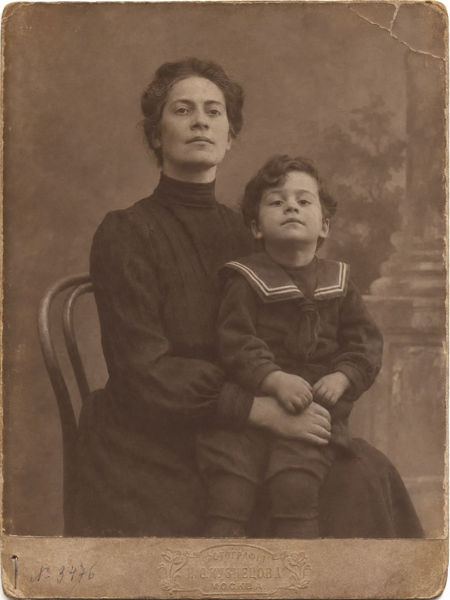

Задние ряды

«Председательствующий: Объявляю шестое заседание суда открытым. <…>
[Подсудимому] Вы слышали обвинительное заключение в день открытия процесса?
Подсудимый: Да.
Председательствующий: Виновны вы или не виновны по первому пункту?
Подсудимый: В смысле обвинения — нет. <…>
Председательствующий: Виновны вы или не виновны по пятнадцатому пункту?
Подсудимый: В смысле обвинения — нет».Стенограмма процесса Адольфа Эйхмана. Иерусалимский окружной суд, уголовное дело 40/61, заседание 6.
Понедельник, 17 апреля 1961 года (1 ияра 5721 года).Звучит: «Lejana tierra mía», Карлос Гардель (музыка) и Альфредо Ле Пера (слова), 1935.
Очередь начиналась у дверей и шла вниз по улице Бецалель, мимо двух подъездов и киоска с газетами. Арье стоял в ней шестое утро.
Впереди него стояли две женщины в платках и говорили на идише. За ним — парень в солдатской куртке без погон, с книжкой под мышкой. Ещё дальше — старик в чёрной шляпе, который каждый день приходил раньше всех и всё равно оказывался в середине очереди. Этих троих Арье видел и вчера. Человека в серой шляпе, который стоял за стариком, он видел впервые.
На балконах напротив уже висели флаги. Хозяева вывесили их с утра, к вечеру: вечером начинался День независимости, тринадцатый. Сегодня был день памяти павших. Флаги висели, никто их ещё не трогал, а люди на балконах стояли так же, как в первый день процесса, — в халатах, с чашками, и смотрели вниз, на очередь.
В мае в Буэнос-Айресе тоже вешали флаги. Гирлянды лампочек на столбах, ленты на Санта-Фе. Арье подумал об этом и перестал думать.
Плащ он не снял, хотя было тепло. В правом кармане лежала плоская картонная коробка, квадратная, чуть больше ладони. Она оттягивала карман, и плащ висел на правую сторону. В нагрудном кармане пиджака, под плащом, лежала карточка в конверте из папиросной бумаги.
У дверей полицейский проверял билеты и смотрел в сумки. Мужчин он хлопал по карманам. Он хлопнул Арье по правому боку и задержал руку.
— Что это?
— Плёнка.
— Какая плёнка?
— Магнитофонная.
Полицейский посмотрел на него. Арье был загорелый, в выглаженной рубашке, коротко стриженный по бокам, и полицейский видел перед собой то, что видел: человека из армии, который не хочет ничего объяснять.
— Музыка? — спросил он.
— Нет.
— А что?
— Голос.
Полицейский подумал и махнул рукой: проходи. Человек в серой шляпе стоял от них в шести шагах и смотрел не на полицейского, а на карман Арье. Потом на билет у себя в руке.
---
Зал Бейт-Ха-Ам строили как театр. Десять лет строили, рассказывали в очереди, и всё никак не могли достроить, а к процессу достроили за несколько месяцев. На месте сцены теперь сидел суд. Высокий стол для трёх судей, под ним столы для обвинения и защиты, сбоку — место для свидетеля. У края сцены стояла стеклянная будка, похожая на кабину лифта. Стекло в ней было толстое, зеленоватое на срезе. Говорили, что пули его не берут.
Мест было семьсот пятьдесят. Арье садился в последний ряд, в крайнее кресло у прохода, у стены. Отсюда были видны вся сцена, весь зал и обе двери. Сцену он видел хуже всех в зале. Дверь — лучше всех.
В Буэнос-Айресе он садился спиной к стене. Здесь садился так же.
Без двадцати девять кресло рядом с ним занял Мика.
Арье видел его второй раз в жизни. Первый раз был в Риме, двадцать минут на скамейке у вокзала. Потом был только голос в трубке на Конституции, молодой, с книжным испанским. Мика оказался старше своего голоса. Лет тридцати пяти, очки в тонкой оправе, рубашка без галстука, на колене бумажная папка, в которой ничего не было — Арье видел по тому, как она лежала.
Говорили на иврите, вполголоса. Вокруг говорили так же.
— Ты всегда сзади, — сказал Мика.
— Отсюда видно дверь.
— Шестой день?
— Шестой.
Мика посмотрел на сцену. Там никого не было. Человек в белой рубашке поправлял микрофоны.
— Твои чемоданы разбирают до сих пор, — сказал Мика. — Двенадцать человек. Немецкий, испанский, греческий. Нашли женщину, которая читает грузинский. Она из Кутаиси, ей семьдесят лет. Работает за деньги и ничего не спрашивает.
— Хорошо.
— Не очень. — Мика открыл папку и закрыл. — В тетради есть кресты. Чёрные, свежие. Их два. Первая страница, вторая строка. И пятьдесят вторая, первая строка. Ни к одному кресту нет карточки.
— Одна лежит у дона Аурелио, — сказал Арье. — В склепе.
— А вторая?
— Сгорела.
— Ты видел, как она горела?
— Нет. Мне сказали, что часть карточек сожгли.
— Кто решал, что сжечь?
— Князь.
— Какой князь?
— Переводчик.
Мика кивнул так, будто ждал этого слова.
— Переводчика в городе нет, — сказал он. — С июля. Соседи говорят, уехал домой.
— Куда домой?
— Этого соседи не знают. — Мика помолчал. — Старик умер. Второго июня, в четверг. Нашла прислуга, утром. Она приходит по понедельникам и четвергам.
Арье смотрел на пустую будку.
— Похоронили на Чакарите, — сказал Мика. — В склепе у какого-то итальянца. Наши люди спрашивали, кто платил. Никто не платил. Портеро с другой улицы открыл своим ключом, и всё.
— Ясно.
— Американцы два раза спрашивали в посольстве про закупщика шерсти. Вежливо. Им сказали, что он в Антверпене. — Мика снял очки, посмотрел их на свет и надел. — Твоего, с Ла-Пампы, так и не нашли.
— Я знаю.
— Ты на него смотришь? — Мика кивнул на будку. — Каждый день?
— Я смотрю на зал.
Мика встал. Он постоял в проходе, глядя на передние ряды, где сидели журналисты.
— Я буду там, — сказал он. — Сзади ничего не видно.
— Мне видно.
Мика ушёл вниз по проходу. Арье посмотрел ему в спину, потом на дверь. В дверь входил человек в серой шляпе. Он сел через проход, на четыре ряда ближе к сцене, и шляпу положил на колено.
---
В восемь пятьдесят семь открылась дверь в стене за стеклянной будкой. Её не было видно, пока она не открылась, — тот же цвет, что и стена.
Зал зашевелился и стих.
Первым вошёл полицейский, за ним человек в тёмном костюме, за ним второй полицейский. Человек в костюме сел, полицейские встали по сторонам. Он надел наушники, поправил их на висках. Перед ним лежали бумага и карандаш.
Из последнего ряда он был маленький. Костюм тёмно-синий, рубашка белая, тёмный галстук. Пиджак был ему чуть велик в плечах, это было видно даже отсюда. Очки. Залысины.
Арье видел его в шестой раз. В Буэнос-Айресе он не видел его ни разу. Его участок был другой. В Буэнос-Айресе этот человек был для него словом «Гарибальди», которое молодой немец сказал губами за столом в «Сан-Ремо», и ещё словом «немец», которое говорили все: немец пропал, немца ищут, немца с Гарибальди продают.
Вошли судьи. Зал встал. Человек в будке встал тоже.
---
Свидетелем был полицейский офицер, капитан Авнер Лесс. Прошлым летом и всю зиму он допрашивал человека из будки, месяцами, и всё записывал на плёнку.
Сегодня плёнку крутили в зале.
Арье не был готов к тому, что голос будет такой.
Голос говорил по-немецки. Ровный, немного хриплый, с паузами там, где человек ищет точное слово. Иногда он сам себя поправлял. Иногда второй голос, тоже по-немецки, задавал вопрос, и первый отвечал не сразу. Потом плёнку останавливали, и переводчик повторял сказанное на иврите, а потом другой голос — по-английски.
Немецкий Арье понимал плохо. Он понимал числа. Он понимал названия городов. Голос назвал Минск. Потом голос назвал число, и после остановки переводчик повторил его на иврите. Шесть миллионов. Голос назвал его так, как называют число в отчёте.
Женщина в ряду перед ним писала в блокноте стенографическими крючками. На этом месте она перестала писать и долго держала карандаш над бумагой. Старик в чёрной шляпе, через три кресла, расстегнул воротник рубашки.
Человек в будке слушал свой голос. Иногда он наклонялся к маленькому микрофону сбоку и что-то говорил в него, коротко. Микрофон был проведён вниз, к столу защиты.
Арье держал руку в правом кармане, на коробке.
Он подумал о сером «Грундиге» на столе в квартире на Эсмеральде. О зелёном глазе, который светился, когда машина слушала. О голосе, который говорил ему: «Это девятая катушка». «Я останавливаю машину». «Признаюсь». Тот голос тоже был ровный. Тоже искал точные слова.
Арье слушал те катушки в пустой комнате над прачечной, на улице Тукуман, по одной в вечер. Последнюю, десятую, он не слушал ни разу. Он был при ней, когда её писали. Она лежала у него в кармане, в той коробке, что стояла на столе рядом с машиной.
Плёнку в зале остановили. Переводчик заговорил на иврите.
---
В десять часов, когда переводчик кончил, председательствующий судья заговорил сам. Он сказал несколько слов. Сегодня день памяти тех, кто пал в войне за независимость. Суд прерывает заседание на две минуты молчания.
Зал встал.
Встали журналисты в первых рядах. Встал Мика, Арье видел его затылок. Встали женщины, которые говорили на идише, парень в солдатской куртке, старик в чёрной шляпе, человек в серой. Встали судьи. Встали адвокат и прокурор.
В стеклянной будке встал человек в тёмном костюме. Полицейские по сторонам стояли и раньше. Теперь стояли все, и в зале было слышно, как на улице, далеко, проехала машина.
Арье стоял, держа руки по швам.
Он подумал про Узи. Узи погиб в апреле сорок восьмого года на дороге в Иерусалим, у Баб-эль-Вада, там, где дорога входит в ущелье. Ему было девятнадцать. Он всю ночь перед этим чистил чужую винтовку, потому что его собственную забрали в другой взвод. Потом про Шайке. Шайке умер от раны в живот, в кузове грузовика, и всю дорогу просил пить, а пить ему не давали, потому что при такой ране нельзя. Потом про Бени, который был с ним в кибуце с пяти лет. Бени убили в Катамоне, в последний день апреля, в двух километрах от этого зала. Его тело принесли на двери, снятой с петель.
Арье начал считать секунды, чтобы не сбиться. На третьем десятке он заметил, что считает по-русски.
Он не стал переходить на иврит.
Раз. Два. Три.
Так считала мать. Он не помнил её лица. Он помнил голос, медленный и низкий, и ещё теперь помнил то, что сказал ему человек с зашитой губой на бетонном полу в третьем доке, перед тем как перестал говорить. Её взяли после моего ухода. Я знал, что возьмут. Ушёл всё равно.
Больше про неё никто ничего не знал. Арье и не искал. Он думал об этом в сентябре и в декабре и оба раза решил, что искать некого.
Первая минута кончилась. Он почувствовал это так же, как чувствовал на посту, без часов.
Вторую минуту можно было стоять за неё. Никто в зале об этом не узнает. Никто в зале её не знал.
Он стоял вторую минуту за неё.
Человек в будке стоял тоже.
Судья сказал, что заседание продолжается. Зал сел. Человек в будке сел.
Голос на плёнке заговорил с того места, где его остановили.
---
Заседание прервали в половине одиннадцатого. Объявили, что суд соберётся в пятницу.
Люди выходили медленно. В проходе было тесно. Человек в серой шляпе вышел раньше всех и у двери не оглянулся. Арье дал ему уйти. Потом встал, застегнул плащ, чтобы не было видно, как тянет карман, и вышел.
На улице было солнце. На балконах напротив хозяева уже поправляли флаги, расправляли складки. Из окна второго этажа радио передавало что-то медленное, на иврите, хор.
Арье прошёл два квартала, свернул, прошёл квартал и остановился у витрины часовщика. В стекле отражались улица у него за спиной и он сам: шляпа, плащ, седина на висках, которой в сорок восьмом году не было. За ним никто не шёл. Он подождал ещё. Никто.
Кафе было на углу, в полуподвале, три ступеньки вниз. Он ходил сюда шестой день. Хозяин был из Буэнос-Айреса, из Онсе, еврейского квартала у вокзала, приехал в пятьдесят третьем году. Звали его Хаим, а в Буэнос-Айресе звали Хайме. За стойкой у него стоял патефон и полка с пластинками в бумажных конвертах, и он ставил Гарделя, хотя посетители просили что-нибудь своё.
Арье сел спиной к стене. Напротив, над стойкой, висело зеркало в деревянной раме, мутное в углах. В нём была вся дверь.
Хаим принёс ему кофе, турецкий, в маленькой чашке, и стакан воды.
— Сегодня рано, — сказал он по-испански.
— Прервали до пятницы.
— Я слышал. — Хаим вытер руки о фартук. — Он встал?
— Встал.
Хаим постоял, кивнул и ушёл за стойку. Он покрутил ручку патефона, вынул пластинку из конверта, посмотрел на неё и поставил.
Запел Гардель. Высокий, носовой, немного дребезжащий голос, как в холле гостиницы на Конституции. Арье узнал его сразу.
— «Lejana tierra mía», — сказал Хаим из-за стойки. — «Далёкая моя земля». Это из фильма. Гардель поёт её на пароходе, когда уезжает из Буэнос-Айреса. Человек далеко от дома и вспоминает его. Там всё как было: балкон, цветы, солнце. Только той, кого он любит, там нет. — Хаим пожал плечами. — В тот же год Гардель разбился.
Арье пил воду.
Девочка на балконе с книгой, за Курой. Это было на второй катушке. Старик говорил, что видел её пятьдесят шесть лет назад, с улицы, снизу. Тифлис Арье представлял себе плохо, потому что не видел никогда. Он представлял себе балкон, как на улице Бецалель, с флагом.
Дверь в зеркале открылась. Вошёл человек в серой шляпе.
Арье не поднял головы. Он смотрел в зеркало. Человек снял шляпу, сел у окна, спиной к Арье, попросил чаю на иврите с румынским выговором. Развернул газету. «Давар». Читал первую полосу, ту, где про процесс. Читал медленно.
Арье допил кофе.
Человек у окна перевернул страницу. Чай ему принесли, он положил в него три куска сахара и размешивал долго. Потом расплатился, надел шляпу и вышел. В дверях он пропустил женщину с ребёнком и придержал ей дверь. На Арье он не посмотрел ни разу.
Арье подождал. Шаги ушли вверх по ступеням, потом налево. Больше никто не вошёл.
Он достал из нагрудного кармана конверт из папиросной бумаги и вынул карточку. Жёлтый картон размером с открытку, чернила, чужой наклонный почерк, старые буквы. Он прочёл первое слово. Как в тот вечер в комнате у старика: по слогам, губами, без голоса. Последнюю букву он теперь не произносил. Он знал, что она не читается.
Он положил карточку в конверт и конверт в карман. Пластинка кончилась. Игла шуршала по пустой дорожке.
Хаим подошёл забрать чашку и остановился.
— Вы были в Буэнос-Айресе, сеньор? — спросил он. — Я всё хочу спросить. Вы так слушаете.
— Один раз, — сказал Арье по-испански. — Покупал шерсть.
— И как?
— Партия ушла.
Хаим засмеялся, будто понял шутку, и забрал чашку.
— Поставить ещё раз?
— Поставьте.
Хаим вернулся к стойке, поднял иглу и поставил её на начало.